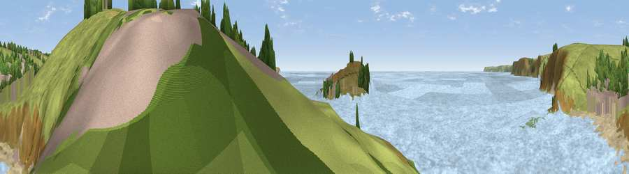

Warren Point
#30544 in England · top 66% of its area beats it · near Bigbury-on-SeaThe view, rendered

A 360° render of this exact spot computed from the terrain model, tree cover and land cover — summer colours, afternoon light, calibrated against photographs of famous viewpoints. Real trees, hedges and buildings will differ in detail.
The panorama
Grey silhouette: terrain skyline in each direction (720 bearings, Earth curvature and refraction included). Dashed green: skyline with trees (+15 m) and buildings (+8 m) as obstacles. Blue strip: how far the ground is visible on each bearing.
Where the view opens
Wedge length = distance to the farthest visible ground on that bearing (vegetation-aware). Rings at 10, 25 and 50 km.
What fills the view
73% water · 20% grassland · 3% woodland · 3% bare ground · 1% built-up
Angular shares of the visible panorama (visual magnitude), not map area. Landscape diversity 0.36 (0–1 Shannon).
Key numbers
More beautiful places nearby
The staircase of upgrades: each row has a higher view potential than everything closer. Driving times are estimates from straight-line distance, calibrated against real road routing — check an actual route before setting out.
| Place | Direction | Drive | Score |
|---|---|---|---|
| Viewpoint near Bigbury-on-Sea | ENE · 1 km | ~2 min | 76.8 |
| Viewpoint near Mothecombe | WNW · 3 km | ~7 min | 78.6 |
| Viewpoint near Hope | SSE · 7 km | ~14 min | 84.4 |
| Viewpoint near East Prawle | ESE · 14 km | ~26 min | 84.6 |
| Pencarrow Head | W · 50 km | ~71 min | 86.0 |
| Viewpoint near Stenalees | W · 66 km | ~89 min | 88.0 |
| Viewpoint near Crackington Haven | NW · 72 km | ~95 min | 88.1 |
| Golden Cap | ENE · 89 km | ~114 min | 88.7 |
50.28502, -3.89764 · source: osm viewpoint · position refined by local search. Computed location — check access rights before visiting.